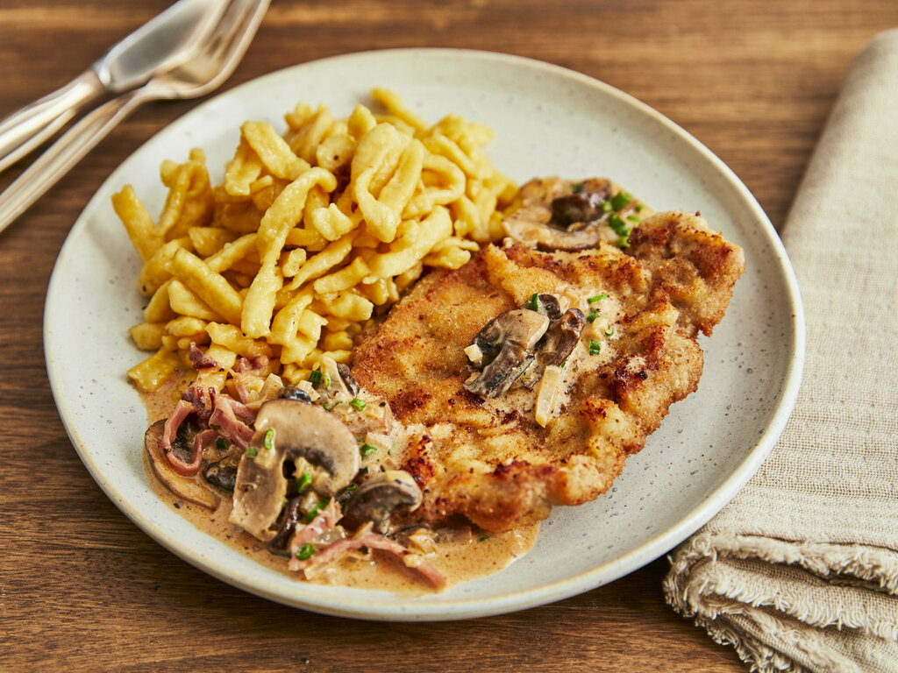

Jägerschnitzel is a traditional German version of schnitzel that is topped with a gravy called Jägersoße, meaning hunter's sauce. Originally made with venison or wild boar, nowadays the most common types of meat used for this dish are pork or veal.
Meal prep time : 55 minutes
Servings : 4